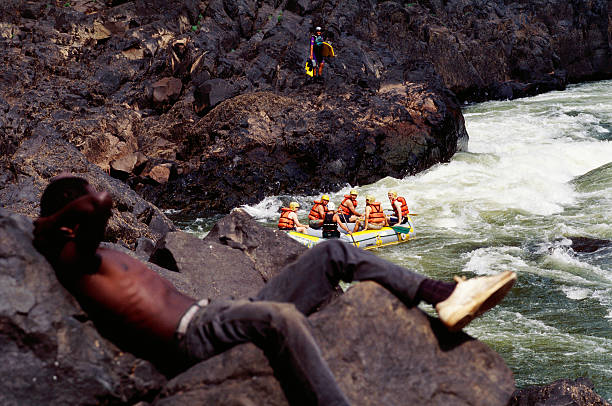

Beginner's River Rafting
Perfect for first-timers, this trip offers a gentle introduction to rafting.


Perfect for first-timers, this trip offers a gentle introduction to rafting.
For those with some experience, this trip includes exciting rapids and stunning scenery.

A thrilling adventure for experienced rafters, tackling the most challenging rapids.
